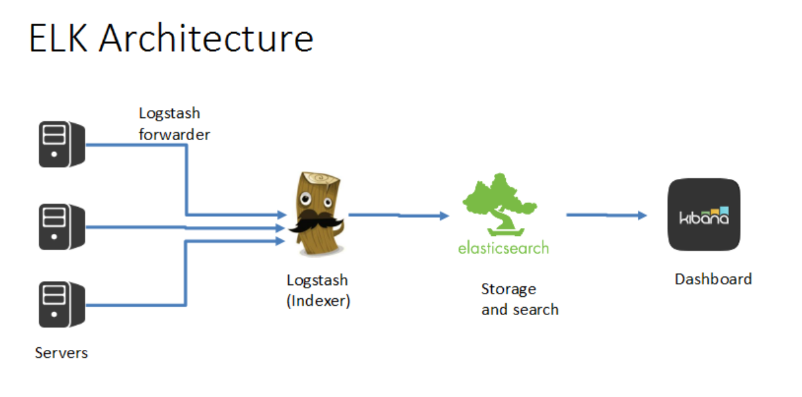

Openstack log analysis using ELK
Posted on Sat 25 June 2016 in Openstack
This write up explains the basics of ELK and how can we leverage it to analyze Openstack logs.
Short intro to ELK

The above is a simple generic architecture of ELK. It has the following components.
1) Shipper – Shipper (Logstash forwarder) is a component which collects the logs and send it to the ELK server. Shipper runs on all the servers where we need to collect logs.
2) Logstash – Logstash collects the logs, parse it and index it. Logstash conf files usually comprises of input, output and filters.
3) Elasticsearch – Elasticsearch is the search engine of the logs. It is where the logs are actually stored and optimized for quick retrieval.
4) Kibana – It is a dashboard to visualize the elasticsearch data
5) Broker – Broker is another component which sits in between the logstash forwarder and the logstash indexer. Since logstash in ELK server might not be able to handle a bulk load of logs, all the logs from shipper can be sent to a broker (typically redis) and that it turn will send the logs to Logstash.
The above is one simple architecture. But in general, we can use different tools and architecture. For example there are different tools for shipping logs like filebeat, logstash-forwarder (deprecated) and even logstash can be used as shipper. In that case where logstash is used as shipper, we can process the logs and parse it in the client side itself. This can take the load of the ELK server and allows you to drop less useful logs in the client side.
Logstash
As I said earlier logstash conf files which are present in /etc/logstash/conf.d can contain 3 parts – input, output, filter.
Input
Input plugin enables a specific source of events to be read by Logstash.
Some examples of input
- Beats
- File
- Stdin
- Eventlog
Filter
A filter plugin performs intermediary processing on an event. Filters are often applied conditionally depending on the characteristics of the event.
Some examples are
- Csv
- Date
- Grok
- Json
Output
An output plugin sends event data to a particular destination.
Some examples are
- Csv
- redis
- elasticsearch
- File
- Jira, Nagios, pagerduty
- Stdout
Codec
A codec plugin changes the data representation of an event
Some examples are
- Collectd - Reads events from the collectd binary protocol using UDP
- Graphite - Reads graphite formatted lines
- Json - Reads JSON formatted content, creating one event per element in a JSON array
- Plain - Reads plaintext with no delimiting between events
- rubydebug - Applies the Ruby Awesome Print library to Logstash events
ELK installation –
http://galaxy.ansible.com/bingoarunprasath/elk/ https://www.elastic.co/downloads
Example 1 – logtstash.conf
input {
stdin {}
}
filter{
}
output{
stdout { codec => rubydebug }
}
The above example will just get any input in stdin and print it as a processed output. You can run the logstash server using the following command bin/logstash -f logstash-filter.conf It will now wait for stdin. Now just past a line from any log file.
{
"message" => "127.0.0.1 - - [11/Dec/2013:00:01:45 -0800] \"GET /xampp/status.php HTTP/1.1\" 200 3891 \"http://cadenza/xampp/navi.php\" \"Mozilla/5.0 (Macintosh; Intel Mac OS X 10.9; rv:25.0) Gecko/20100101 Firefox/25.0\"",
"@timestamp" => "2013-12-11T08:01:45.000Z",
"@version" => "1",
"host" => "cadenza",
"clientip" => "127.0.0.1",
"ident" => "-",
"auth" => "-",
"timestamp" => "11/Dec/2013:00:01:45 -0800",
"verb" => "GET",
"request" => "/xampp/status.php",
"httpversion" => "1.1",
"response" => "200",
"bytes" => "3891",
"referrer" => "\"http://cadenza/xampp/navi.php\"",
"agent" => "\"Mozilla/5.0 (Macintosh; Intel Mac OS X 10.9; rv:25.0) Gecko/20100101 Firefox/25.0\""
}
Now we have our ELK and our shipper (logstash again) working.
To monitor the Openstack services, install logstash on all the Openstack servers and use the following filter. (You may need to customize it based on your needs)
# Credits to : https://github.com/godaddy/openstack-logstash
input {
file {
path => ['/var/log/nova/nova-api-metadata.log']
tags => ['nova', 'oslofmt', 'novametaapi']
type => "nova"
}
file {
path => ['/var/log/neutron/neutron-dhcp-agent.log']
tags => ['neutron', 'oslofmt']
type => "neutron"
}
file {
path => ['/var/log/glance/api.log']
tags => ['glance', 'oslofmt', 'glanceapi']
type => "glance"
}
file {
path => ['/var/log/glance/registry.log']
tags => ['glance', 'oslofmt']
type => "glance"
}
file {
path => ['/var/log/glance/scrubber.log']
tags => ['glance', 'oslofmt']
type => "glance"
}
file {
path => ['/var/log/nova/nova-api.log']
tags => ['nova', 'oslofmt', 'novaapi']
type => "nova"
}
file {
path => ['/var/log/nova/nova-conductor.log']
tags => ['nova', 'oslofmt']
type => "nova"
}
file {
path => ['/var/log/nova/nova-manage.log']
tags => ['nova', 'oslofmt']
type => "nova"
}
file {
path => ['/var/log/nova/nova-scheduler.log']
tags => ['nova', 'oslofmt']
type => "nova"
}
file {
path => ['/var/log/nova/nova-spicehtml5proxy.log']
tags => ['nova', 'oslofmt']
type => "nova"
}
file {
path => ['/var/log/keystone/keystone-all.log']
tags => ['keystone', 'oslofmt', 'keystoneapi']
type => "keystone"
}
file {
path => ['/var/log/keystone/keystone-manage.log']
tags => ['keystone', 'oslofmt']
type => "keystone"
}
file {
path => ['/var/log/ceilometer/ceilometer-agent-central.log']
tags => ['ceilometer', 'oslofmt']
type => "ceilometer"
}
file {
path => ['/var/log/ceilometer/ceilometer-alarm-notifier.log']
tags => ['ceilometer', 'oslofmt']
type => "ceilometer"
}
file {
path => ['/var/log/ceilometer/ceilometer-api.log']
tags => ['ceilometer', 'oslofmt', 'ceilometerapi']
type => "ceilometer"
}
file {
path => ['/var/log/ceilometer/ceilometer-alarm-evaluator.log']
tags => ['ceilometer', 'oslofmt']
type => "ceilometer"
}
file {
path => ['/var/log/ceilometer/ceilometer-collector.log']
tags => ['ceilometer', 'oslofmt']
type => "ceilometer"
}
file {
path => ['/var/log/heat/heat.log']
tags => ['heat', 'oslofmt', 'heatapi']
type => "heat"
}
file {
path => ['/var/log/neutron/neutron-server.log']
tags => ['neutron', 'oslofmt', 'neutronapi' ]
type => "neutron"
}
#Not collecting RabbitMQ logs for the moment
#file {
# path => ['/var/log/rabbitmq/rabbit@<%= @hostname %>.log']
# tags => ['rabbitmq', 'oslofmt']
# type => "rabbitmq"
#}
file {
path => ['/var/log/httpd/access_log']
tags => ['horizon']
type => "horizon"
}
file {
path => ['/var/log/httpd/error_log']
tags => ['horizon']
type => "horizon"
}
file {
path => ['/var/log/httpd/horizon_access_log']
tags => ['horizon']
type => "horizon"
}
file {
path => ['/var/log/httpd/horizon_error_log']
tags => ['horizon']
type => "horizon"
}
file {
path => ['/var/log/nova/nova-compute.log']
tags => ['nova', 'oslofmt']
type => "nova"
}
file {
path => ['/var/log/libvirt/libvirtd.log']
tags => ['libvirt']
type => "libvirt"
}
file {
path => ['/var/log/ceilometer/ceilometer-agent-compute.log']
tags => ['ceilometer', 'oslofmt']
type => "ceilometer"
}
file {
path => ['/var/log/neutron/neutron-dhcp-agent.log']
tags => ['neutron', 'oslofmt']
type => "neutron"
}
file {
path => ['/var/log/neutron/neutron-openvswitch-agent.log']
tags => ['neutron', 'oslofmt']
type => "neutron"
}
file {
path => ['/var/log/openvswitch/ovs-ctl.log']
tags => ['openvswitch']
type => "openvswitch"
}
file {
path => ['/var/log/openvswitch/ovsdb-server.log']
tags => ['openvswitch']
type => "openvswitch"
}
file {
path => ['/var/log/openvswitch/ovs-vswitchd.log']
tags => ['openvswitch']
type => "openvswitch"
}
file {
path => ['/var/log/audit/audit.log']
tags => ['audit']
type => "audit"
}
file {
path => ['/var/log/dmesg']
tags => ['dmesg', 'kernel']
type => "dmesg"
}
# file {
# path => ['/var/log/messages']
# tags => ['syslog']
# type => "syslog"
# }
file {
path => ['/var/log/secure']
tags => ['secure']
type => "secure"
}
file {
path => ['/var/log/yum.log']
tags => ['yum']
type => "yum"
}
}
filter {
if "oslofmt" in [tags] {
multiline {
negate => true
pattern => "^%{TIMESTAMP_ISO8601} "
what => "previous"
}
multiline {
negate => false
pattern => "^%{TIMESTAMP_ISO8601}%{SPACE}%{NUMBER}?%{SPACE}?TRACE"
what => "previous"
}
grok {
# Do multiline matching as the above mutliline filter may add newlines
# to the log messages.
# TODO move the LOGLEVELs into a proper grok pattern.
match => { "message" => "(?m)^%{TIMESTAMP_ISO8601:logdate}%{SPACE}%{NUMBER:pid}?%{SPACE}?(?<loglevel>AUDIT|CRITICAL|DEBUG|INFO|TRACE|WARNING|ERROR) \[?\b%{NOTSPACE:module}\b\]?%{SPACE}?%{GREEDYDATA:logmessage}?" }
add_field => { "received_at" => "%{@timestamp}" }
}
if [module] == "iso8601.iso8601" {
drop {}
}
if "keystoneapi" in [tags] {
mutate {
gsub => ['logmessage',"\"",""]
}
grok {
match => { "logmessage" => "\[\-\] %{NOTSPACE:requesterip} \- \- \[%{NOTSPACE:req_date} %{NOTSPACE:req_time}\] %{NOTSPACE:method} %{NOTSPACE:url_path} %{NOTSPACE:http_ver} %{NUMBER:response} %{NUMBER:bytes} %{NUMBER:seconds}" }
add_field => ["api", "keystone"]
add_tag => ["apimetrics"]
}
} else if "novaapi" in [tags] {
if [module] == "nova.osapi_compute.wsgi.server" {
mutate {
gsub => ['logmessage',"\"",""]
}
grok {
match => { "logmessage" => "\[req\-%{NOTSPACE:requestid} %{NOTSPACE:user_id} %{NOTSPACE:tenant}\] %{NOTSPACE:requesterip} %{NOTSPACE:method} %{NOTSPACE:url_path} %{NOTSPACE:http_ver} status\: %{NUMBER:response} len\: %{NUMBER:bytes} time\: %{NUMBER:seconds}" }
add_field => ["api", "nova"]
add_tag => ["apimetrics"]
}
}
} else if "neutronapi" in [tags] {
if [module] == "neutron.wsgi" {
if "accepted" not in [logmessage] {
mutate {
gsub => ['logmessage',"\"",""]
}
grok {
match => { "logmessage" => "\[req\-%{NOTSPACE:requestid} None\] %{NOTSPACE:requesterip} \- \- \[%{NOTSPACE:req_date} %{NOTSPACE:req_time}\] %{NOTSPACE:method} %{NOTSPACE:url_path} %{NOTSPACE:http_ver} %{NUMBER:response} %{NUMBER:bytes} %{NUMBER:seconds}" }
add_field => ["api", "neutron"]
add_tag => ["apimetrics"]
}
}
}
} else if "glanceapi" in [tags] {
if [module] == "glance.wsgi.server" {
mutate {
gsub => ['logmessage',"\"",""]
}
grok {
match => { "logmessage" => "\[%{NOTSPACE:requestid} %{NOTSPACE:user_id} %{NOTSPACE:tenant} \- \- \-\] %{NOTSPACE:requesterip} \- \- \[%{NOTSPACE:req_date} %{NOTSPACE:req_time}\] %{NOTSPACE:method} %{NOTSPACE:url_path} %{NOTSPACE:http_ver} %{NUMBER:response} %{NUMBER:bytes} %{NUMBER:seconds}" }
add_field => ["api", "glance"]
add_tag => ["apimetrics"]
}
}
} else if "novametaapi" in [tags] {
mutate {
gsub => ['logmessage',"\"",""]
}
if [module] == "nova.api.ec2" {
grok {
match => { "logmessage" => "\[%{GREEDYDATA:requestid}\] %{NUMBER:seconds}s %{NOTSPACE:requesterip} %{NOTSPACE:method} %{NOTSPACE:url_path} None\:None %{NUMBER:response} %{GREEDYDATA:user_agent}" }
add_field => ["api", "metadata-ec2"]
add_tag => ["apimetrics"]
}
} else if [module] == "nova.metadata.wsgi.server" {
grok {
match => { "logmessage" => "\[%{GREEDYDATA:requestid}\] %{NOTSPACE:requesterip} %{NOTSPACE:method} %{NOTSPACE:url_path} %{NOTSPACE:http_ver} status\: %{NUMBER:response} len\: %{NUMBER:bytes} time\: %{NUMBER:seconds}" }
add_field => ["api", "metadata"]
add_tag => ["apimetrics"]
}
}
}
} else if "libvirt" in [tags] {
grok {
match => { "message" => "(?m)^%{TIMESTAMP_ISO8601:logdate}:%{SPACE}%{NUMBER:code}:?%{SPACE}\[?\b%{NOTSPACE:loglevel}\b\]?%{SPACE}?:?%{SPACE}\[?\b%{NOTSPACE:module}\b\]?%{SPACE}?%{GREEDYDATA:logmessage}?" }
add_field => { "received_at" => "%{@timestamp}"}
}
mutate {
uppercase => [ "loglevel" ]
}
} else if [type] == "syslog" {
grok {
match => { "message" => "%{SYSLOGTIMESTAMP:syslog_timestamp} %{SYSLOGHOST:syslog_hostname} %{DATA:syslog_program}(?:\[%{POSINT:syslog_pid}\])?: %{GREEDYDATA:logmessage}" }
add_field => [ "received_at", "%{@timestamp}" ]
}
syslog_pri {
severity_labels => ["ERROR", "ERROR", "ERROR", "ERROR", "WARNING", "INFO", "INFO", "DEBUG" ]
}
date {
match => [ "syslog_timestamp", "MMM d HH:mm:ss", "MMM dd HH:mm:ss" ]
}
if !("_grokparsefailure" in [tags]) {
mutate {
replace => [ "@source_host", "%{syslog_hostname}" ]
}
}
mutate {
remove_field => [ "syslog_hostname", "syslog_timestamp" ]
add_field => [ "loglevel", "%{syslog_severity}" ]
add_field => [ "module", "%{syslog_program}" ]
}
}
}
#output {
# #also include an output to your elastic search...
# #output to statsd running on local server which will output to graphite or whatever timeseries database you are using.
# statsd {
# tags=> [apimetrics]
# host => "localhost"
# port => "8125"
# namespace => "logstash"
# increment => ["%{api}.api.%{method}.%{response}", "%{api}.api.%{method}.total", "%{api}.api.%{response}.total", "%{api}.api.total"]
# timing => ["%{api}.api.%{method}.%{response}", "%{seconds}" ]
# timing => ["%{api}.api.%{response}", "%{seconds}"]
# }
#}
#output {
# elasticsearch { hosts => ["localhost:9200"] }
# stdout { codec => rubydebug }
#redis {
# host => "192.168.0.20"
# data_type => "list"
# key => "logstash"
# codec => json
#}
#}
output {
elasticsearch {
hosts => ["localhost:9200"]
#sniffing => true
#manage_template => false
#index => "logstash-*"
#document_type => "%{[@metadata][type]}"
}
stdout { codec => rubydebug }
}
This filter will grab the files provided in the input, parse it and send it to the output. In my case I am sending it to elasticsearch.
Grok filters
You might have noticed that we have used grok filters to parse the Openstack files. Grok is currently the best way in logstash to parse crappy unstructured log data into something structured and queryable.
This tool is perfect for syslog logs, apache and other webserver logs, mysql logs, and in general, any log format that is generally written for humans and not computer consumption.
Logstash ships with about 120 patterns by default. You can find them here: https://github.com/logstash-plugins/logstash-patterns-core/tree/master/patterns. You can add your own trivially. (See the patterns_dir setting)
If you need help building patterns to match your logs, you will find the http://grokdebug.herokuapp.com and http://grokconstructor.appspot.com/ applications quite useful!